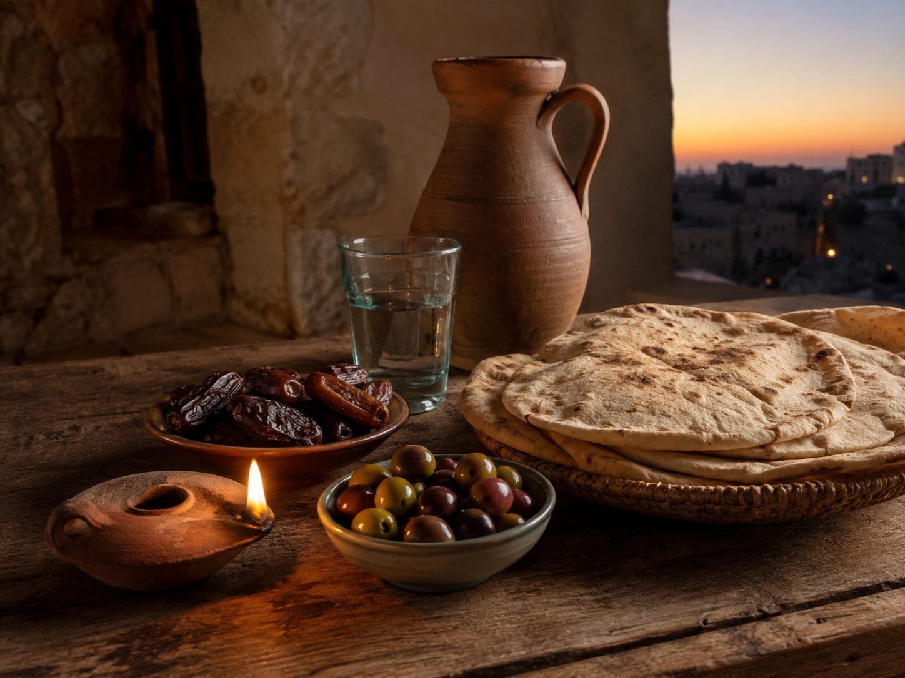
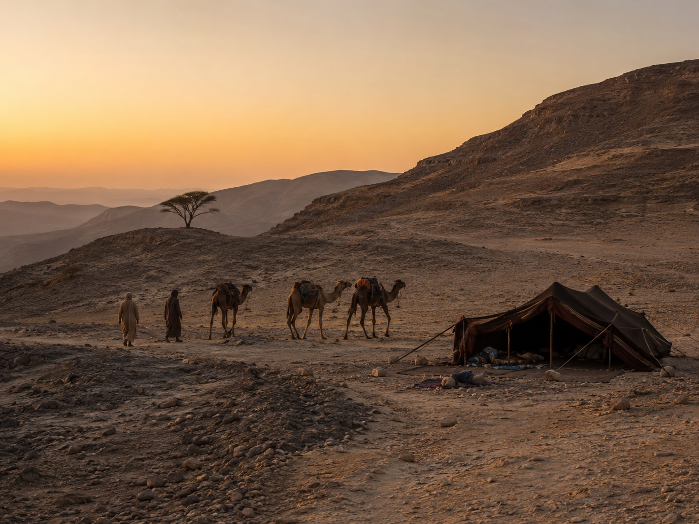
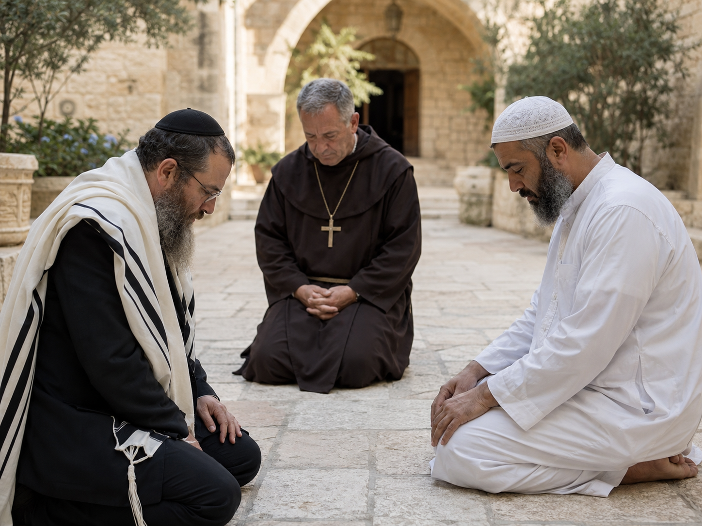

The Hidden Unity of Christianity, Islam, and Judaism
Beneath the surface of history, beneath the visible garments of doctrine, ritual, language, and law, there burns a single ancient flame. Judaism, Christianity, and Islam are often treated as rival civilizations of faith, each standing apart in its own sacred enclosure. Yet when one looks more deeply, with the eye of symbolism rather than controversy, a remarkable unity begins to appear.
These three traditions are not merely three religions. They are three great rivers descending from the same primordial mountain. Each carries the memory of Abraham. Each speaks of revelation. Each bows before the One. Each guards a sacred book. Each knows the drama of exile and return, sin and purification, law and mercy, judgment and redemption. Each understands that human life is not accidental, but woven into a divine order.
To study their commonalities is not to erase their differences. Their differences are real, profound, and worthy of respect. But beneath those differences lies a shared architecture of meaning: a hidden temple built from prophecy, covenant, prayer, sacrifice, angelic mediation, sacred language, moral purification, and the mystery of the One God.

The One Behind the Many
The first and most obvious commonality is also the most metaphysically profound: Judaism, Christianity, and Islam all affirm the supremacy of the One God.
Judaism proclaims the Shema: the Lord is One. Christianity confesses one God, understood through the mystery of Father, Son, and Holy Spirit. Islam declares with unmatched force: la ilaha illa Allah, there is no god but God.
At the exoteric level, their theological formulations differ. But esoterically, all three point toward the same vertical truth: reality is not governed by chaos, competing gods, or blind material accident. Behind existence stands a single divine source, the Absolute, the Origin, the uncreated ground from which all created things receive their being.
In Judaism, this divine unity radiates through names such as YHWH, Elohim, Adonai, and the hidden mysteries of the Divine Name. In Christianity, the One becomes intimately known through Logos, Incarnation, Spirit, and the mystery of divine love entering history. In Islam, the One is contemplated through the beautiful Names of Allah: the Merciful, the Wise, the Hidden, the Manifest, the Light, the Living.
All three traditions preserve the idea that the visible world is not self-sufficient. Creation is a sign. Nature is a scripture. History is a symbolic field. The human soul is called to recognize the invisible author behind the visible text.
Abraham: The Father of the Three Roads
All three traditions trace their spiritual ancestry to Abraham.
In Judaism, Abraham is the patriarch of covenant, the one called out from the nations to walk before God. In Christianity, Abraham becomes the father of faith, the one whose trust in God foreshadows the deeper mystery of grace. In Islam, Ibrahim is the pure monotheist, the hanif, the one who turns away from idols and submits wholly to the Divine.
Esoterically, Abraham represents the soul that awakens from inherited illusion. He leaves the familiar land, breaks with idolatry, and journeys toward the unseen promise. His life is the archetype of initiation: departure, testing, sacrifice, covenant, and blessing.
To be a child of Abraham is not merely to belong to a lineage. It is to participate in a spiritual pattern. Abraham is the figure of radical orientation toward the One. He hears the Voice, obeys the call, and becomes a bridge between heaven and earth.
This is one of the deepest commonalities between Judaism, Christianity, and Islam: each asks the human being to become Abrahamic, to leave false centers, abandon idols, and align the heart with the living God.

The Sacred Book as Heavenly Descent
Each of the three traditions is a religion of revelation.
Judaism receives the Torah. Christianity receives the Gospel, rooted in the Hebrew Scriptures and fulfilled in the mystery of Christ. Islam receives the Qur'an. In all three, the sacred text is not merely literature. It is a descent of divine speech into human language.
This gives all three traditions a powerful esoteric dimension. The book is not only read; it is contemplated, recited, memorized, chanted, interpreted, and interiorized. The sacred word becomes a ladder.
In Judaism, Torah is the blueprint of creation, the wisdom through which life is ordered. In Christianity, the Word becomes flesh, making the deepest revelation not only textual but incarnational. In Islam, the Qur'an is the recited revelation, a celestial speech clothed in Arabic sound and rhythm.
The shared mystery is this: divine reality communicates itself. The Infinite speaks into the finite. Heaven bends toward earth through language.
This is why letters, names, sounds, and recitations have such importance in all three traditions. Hebrew, Greek, Latin, Syriac, Arabic: sacred language becomes more than communication. It becomes vibration, vessel, and veil. The divine word is both revealed and concealed, given openly yet containing depths that unfold only through purification, discipline, and illumination.

Angels, Messengers, and the Ladder Between Worlds
Another major commonality is the presence of angels.
Judaism has Michael, Gabriel, Raphael, Uriel, and the hosts of heaven. Christianity inherits and expands this angelic cosmos, with archangels, guardian angels, thrones, dominions, principalities, and powers. Islam speaks frequently of angels, especially Jibril, the angel of revelation, as well as Mikail, Israfil, and Azrael in later tradition.
The angel is one of the great shared symbols of the Abrahamic world. Angels are not merely winged beings. Esoterically, they are intelligences of mediation. They represent orders of divine activity, living rays of command, messengers of the invisible realm.
In all three traditions, revelation often descends through angelic mediation. The angel stands between the uncreated and the created, between the divine command and the human ear. The angel is the bridge of transmission.
This reveals a shared cosmology: reality is layered. The world is not flat. Between God and humanity exists a hierarchy of spiritual intelligences, powers, and messengers. The human being lives in a visible world surrounded by invisible orders.
Prayer as Ascent
Prayer is central to all three traditions. Judaism sanctifies time through daily prayer, blessings, psalms, and liturgical remembrance. Christianity prays through psalms, the Lord's Prayer, contemplative prayer, Eucharistic worship, hymns, and inner communion. Islam structures the day around the five prayers, transforming time itself into a rhythm of surrender.
At the outer level, the forms differ. At the inner level, prayer has the same function: it reorients the soul.
Prayer is the return of the human breath to its divine source. It is speech turned upward. It is the soul remembering that it is not sealed inside itself. In prayer, the human being becomes vertical.
All three traditions understand that the heart must be trained. The world pulls consciousness outward into distraction, appetite, anxiety, and forgetfulness. Prayer gathers the scattered fragments of the self and turns them toward God.
In this sense, prayer is not only request. It is alignment. It is the invisible geometry by which the soul is straightened.

Purification, Fasting, and the Discipline of the Body
Judaism, Christianity, and Islam all understand that the body participates in spiritual life. Judaism has dietary laws, ritual purity, fasting, circumcision, and sacred rhythms of Sabbath and festival. Christianity has baptism, fasting, asceticism, confession, Eucharist, and the discipline of the passions. Islam has wudu, ghusl, fasting during Ramadan, dietary laws, pilgrimage rites, and bodily postures of prayer.
This shared emphasis reveals a profound truth: spirituality is not merely mental belief. It is embodied transformation.
The body is not irrelevant. It is the temple, the instrument, the altar, and the field of discipline. Eating, washing, bowing, kneeling, fasting, walking, speaking, and resting become sacred acts. Matter is trained to remember spirit.
Fasting especially reveals a deep commonality. In all three traditions, fasting is not just deprivation. It is a ritual interruption of appetite. It teaches the soul that it is more than hunger, more than impulse, more than consumption. Through fasting, the lower nature is not hated, but ordered. Desire is not destroyed, but placed beneath a higher light.
Law, Commandment, and the Sacred Order
All three traditions are deeply concerned with divine command. Judaism has mitzvot, the commandments that sanctify life. Christianity has the commandments, the law of love, and the moral teachings of Christ and the apostles. Islam has Sharia, the path of divine guidance governing worship, ethics, society, and personal conduct.
To modern ears, law can sound restrictive. But esoterically, sacred law is not merely control. It is form. It is pattern. It is the architecture through which divine order enters human life.
The commandment says: life has shape. Action matters. The invisible becomes visible through conduct.
All three traditions reject the idea that spirituality can be separated from ethics. One cannot claim union with God while living in cruelty, deception, arrogance, and injustice. The soul must be formed. The will must be disciplined. The heart must be purified.
Law is the outer skeleton of inner transformation. Mercy is its breath. Wisdom is its crown.
Mercy, Repentance, and Return
Despite their seriousness about judgment and commandment, all three traditions are saturated with mercy.
Judaism speaks constantly of return: teshuvah, the turning back of the soul toward God. Christianity centers the drama of redemption, forgiveness, repentance, grace, and reconciliation. Islam repeatedly names God as al-Rahman and al-Rahim, the All-Merciful and Compassionate, and calls the believer to repentance and surrender.
This is one of the most beautiful commonalities: the human being may fall, but is not abandoned.
Sin is not merely legal guilt. Esoterically, sin is disorientation. It is missing the mark, losing the center, turning away from the Real. Repentance is therefore not only apology. It is reorientation. It is the soul turning from fragmentation back toward unity.
All three traditions know the broken heart as a holy place. Tears, confession, remorse, and humility become alchemical waters. The hardened self is softened. The proud self is lowered. The scattered self is gathered again.
Mercy is not weakness in these traditions. Mercy is divine power descending into human fracture.

Prophets as Bearers of Fire
Judaism, Christianity, and Islam all honor prophecy.
Judaism preserves the prophetic tradition of Moses, Isaiah, Jeremiah, Ezekiel, Elijah, and many others. Christianity receives the Hebrew prophets and sees their fulfillment in Christ. Islam reveres many of the same prophets, including Adam, Noah, Abraham, Moses, David, Solomon, Jonah, John, Jesus, and Muhammad as the final prophet.
The prophet is not merely a predictor of events. The prophet is a human being seized by the divine word. He stands at the threshold between heaven and history.
Esoterically, prophecy is the eruption of vertical truth into horizontal time. The prophet tears through collective illusion. He exposes false worship, corrupt power, hypocrisy, injustice, and spiritual sleep. He is often rejected because he carries a fire too pure for ordinary comfort.
All three traditions understand that truth is not always flattering. Revelation wounds before it heals. The prophet breaks the idol so the soul can meet the living God.
The Holy City and the Axis of the World
Jerusalem holds immense significance in all three traditions. For Judaism, it is the city of David, the place of the Temple, the earthly center of covenantal memory and messianic hope. For Christianity, it is the city of Christ's passion, crucifixion, resurrection, and the birth of the apostolic mission. For Islam, Jerusalem is associated with the Night Journey and the sacred precinct known as al-Haram al-Sharif.
Esoterically, Jerusalem is more than geography. It is the symbol of the axis mundi: the meeting point of heaven and earth. It represents the lost center, the holy place, the inner temple, the city of peace that humanity seeks but repeatedly fails to embody.
The earthly Jerusalem is contested because the inner Jerusalem is not yet realized. The sacred city outside mirrors the sacred city within.
All three traditions carry some vision of a sanctified world, a restored order, a healed creation, a city or kingdom in which divine will and earthly life are reconciled.

Judgment, Resurrection, and the World to Come
All three traditions teach that human life is morally consequential and that history moves toward judgment.
Judaism contains varied teachings on resurrection, judgment, and the world to come. Christianity proclaims resurrection, final judgment, heaven, hell, and the renewal of creation. Islam teaches the Day of Judgment, resurrection, paradise, hellfire, and the weighing of deeds.
The shared principle is unmistakable: life is not spiritually neutral. The soul is accountable. Actions echo beyond death. Hidden things are revealed. The invisible quality of a life eventually becomes visible.
Esoterically, judgment is not merely an external courtroom. It is unveiling. The soul encounters the truth of what it has become. Masks fall away. The inner signature of one's life is disclosed.
Resurrection points to one of the greatest mysteries of the Abrahamic imagination: the human being is not destined for dissolution alone. Creation itself is not meaningless debris. Matter can be transfigured. History can be redeemed. Death does not have the final word.
Light as the Common Symbol of Divine Presence
All three traditions use light as a supreme symbol. In Judaism, divine light appears in creation, the menorah, the burning bush, the radiance of Sinai, and the mystical traditions of heavenly illumination. Christianity speaks of Christ as the Light of the World, the transfiguration, the glory of God, and the illumination of the saints. Islam contains the famous imagery of God as the Light of the heavens and the earth, and Islamic mysticism often speaks of unveiling, radiance, and illumination.
Light is perhaps the most universal esoteric symbol shared by these traditions. It is knowledge, presence, purity, revelation, life, and divine nearness.
Darkness is not always evil; sometimes it is mystery, concealment, the hiddenness of God. But light is the disclosure of meaning. It is the ray by which the soul sees.
The journey of the believer in all three traditions may be understood as a movement from opacity to translucence. The heart becomes polished. The inner eye opens. The human being becomes capable of receiving more light.
The Human Being as Image, Servant, and Vessel
Each tradition gives the human being a sacred dignity. Judaism teaches that humanity is made in the image of God. Christianity deepens this through the mystery of Christ as the perfect image and the transformation of the human person through grace. Islam teaches that humanity is created by God, honored, entrusted with responsibility, and called to servanthood and vicegerency.
The human being is not merely an animal with religious ideas. The human being is a threshold creature.
We are earth and breath, dust and spirit, appetite and intellect, weakness and divine calling. We stand between lower and higher worlds. We can descend beneath ourselves or rise beyond ourselves.
In all three traditions, the human being is tested because the human being is significant. Freedom matters. Obedience matters. Love matters. Knowledge matters. The heart matters.
The human being is a vessel. The question is: what fills it?
Idolatry as the Great Spiritual Disease
Judaism, Christianity, and Islam all wage war against idolatry.
At the obvious level, idolatry means worshiping false gods or images as divine. But esoterically, idolatry is far deeper. It is the act of mistaking the partial for the Absolute. It is giving ultimate devotion to something that is not ultimate.
Power can become an idol. Money can become an idol. Nation, ego, pleasure, ideology, even religion itself can become an idol if it replaces the living God with a dead form.
This is one of the most important shared teachings of the Abrahamic traditions: the human heart is constantly tempted to worship fragments.
The command against idolatry is not only ancient polemic. It is a permanent psychological and spiritual diagnosis. The soul becomes like what it worships. If it worships the dead, it becomes deadened. If it worships the Real, it becomes real.
The Inner Temple
Although the outer forms differ, all three traditions contain the mystery of the inner temple.
Judaism has the Temple, the Ark, the Holy of Holies, and later mystical traditions that interiorize sacred space. Christianity speaks of the body as the temple of the Holy Spirit and of Christ as the true temple. Islam orients the body toward the Kaaba and speaks of the purified heart as the place of divine remembrance.
The temple is the ordered space where heaven and earth meet. Esoterically, the true temple is also within the human being.
The altar is the heart. The incense is prayer. The sacrifice is ego. The priestly work is purification. The holy of holies is the secret center where the soul stands before God.
This shared symbolism is extraordinary. Each tradition, in its own way, teaches that the human being must become a sanctuary.
The Threefold Pattern: Covenant, Incarnation, Surrender
One way to understand the three traditions esoterically is through three great spiritual emphases.
Judaism emphasizes covenant: the sacred bond, the chosen responsibility, the sanctification of life through commandment and remembrance.
Christianity emphasizes incarnation: the divine Word entering flesh, the transfiguration of suffering, the mystery of love descending into history.
Islam emphasizes surrender: the total yielding of the human will to the One, the restoration of primordial monotheism, the remembrance of God in every act.
These are not mutually exclusive. Judaism also knows surrender and divine nearness. Christianity also knows covenant and obedience. Islam also knows mercy, intimacy, and sacred embodiment. But as symbolic accents, they reveal three modes of Abrahamic spirituality.
Covenant orders the life. Incarnation illumines the flesh. Surrender purifies the will. Together, they form a powerful triad.
The Hidden Unity
The commonalities between Christianity, Islam, and Judaism are not accidental. They share a spiritual grammar.
One God. One creation. One moral order. One human drama. One prophetic current. One call to repentance. One battle against idolatry. One hope for restoration. One mystery of divine speech descending into the world.
Their disagreements matter, and no serious comparison should pretend otherwise. But their shared foundations are vast, luminous, and deeply intriguing.
Perhaps the greatest commonality is this: all three traditions insist that reality is meaningful because it is addressed. The universe is not silent. The human being is being called.
Called to remember. Called to purify. Called to justice. Called to mercy. Called to the One.
In this sense, Judaism, Christianity, and Islam are three lamps burning in the long night of history. Their flames differ in color, form, and ritual vessel. Yet all three are lit from the same terrible and beautiful mystery: the God beyond image, beyond possession, beyond the idols of tribe and empire, who nevertheless speaks, guides, judges, forgives, and calls the human soul home.
The outer world sees three religions.
The inner eye sees three witnesses.
And behind them all, hidden yet radiant, stands the One.